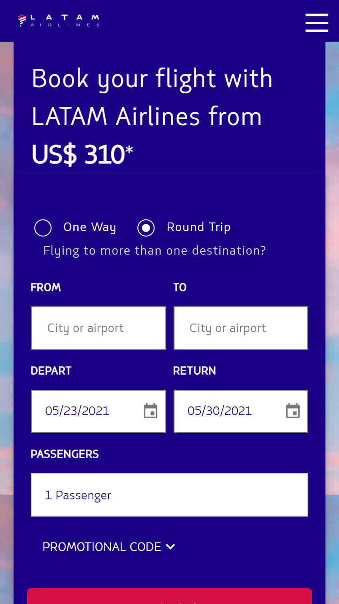
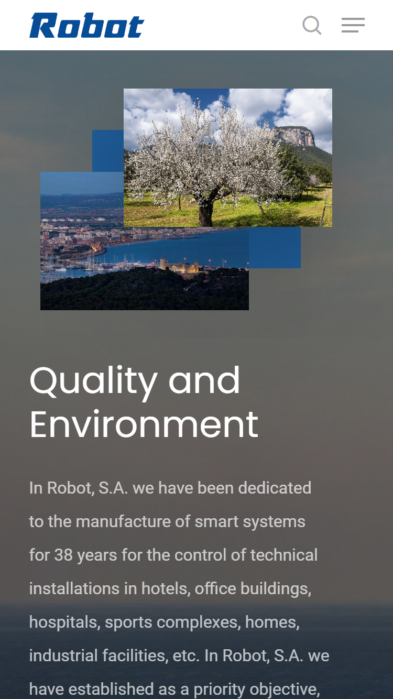
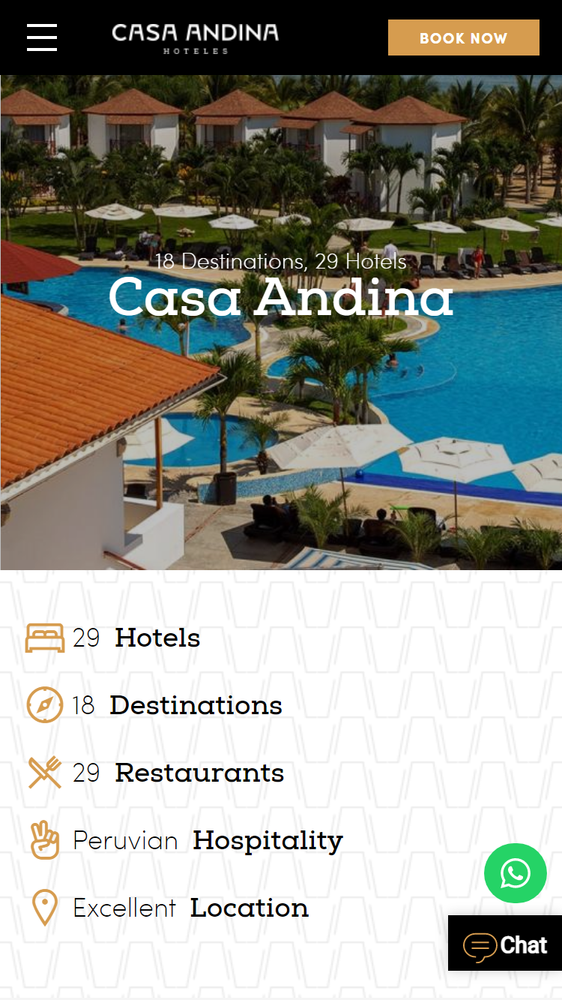

Hick's Law
LATAM Airlines
www.latam.com
In the Latam website I found that the Hick's Law is present when the user is about to buy fly tickets. The menu guides the user from different options in order to fulfill the objective of purchase a flight.
Contrast
Robot
robotcorporativo.com
Contrast is present in the Robot website and it is so clear, the contrast between the gray background and the white in the paragraphs makes the text easy for the eye to read.
Alignment
Casa Andina
www.casa-andina.com
The alignment in this site is nice, it is present among the different icoms of the services offer by the hotel, there is also a perfect alignment between the toggle icom in the menu and the icoms services.